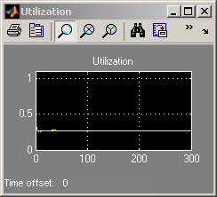

Shared Access Communications Media
Contents
Overview
This model is an abstraction of a communications bus or shared media.
Structure
In this model, each transmitter that uses the bus has exclusive access until the use is completed. In this model, transmit node 1 is sending to receive node 2, and vice versa. Background traffic from other nodes in the network is modeled in the aggregate. You can adjust the aggregate traffic for the other nodes using a slider in the Average Arrival Rate block.
The bus/media abstraction is enclosed in a subsystem to facilitate copying into another model. For example, you can explore further by modeling the delays incurred over a bus between two processors.
Results And Displays
Using the plots, you can monitor bus/media utilization, queue lengths, average waiting times, and the number of dropped packets.
